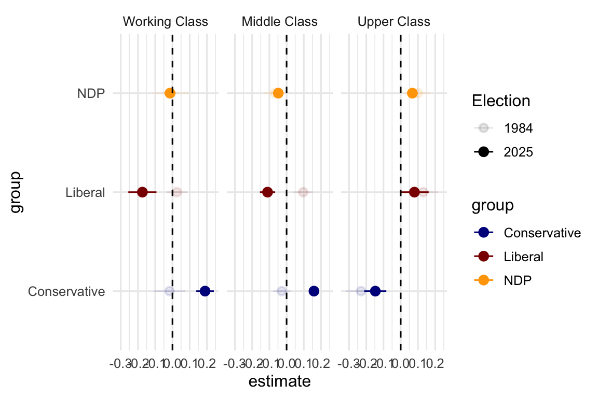

Vote Choice, Housing and Class
All these are multinomial logistic regression models that have vote as the dependent variable. They only include ROC voters. It’s already complicated enough as it is. Conservatives are the reference category. That means that a positive coefficient means that the variable in the row increases the probability that a voter chose the Liberals (NDP) over the Conservatives. A negative coeffficient means that the variable decreases the likelihood that a voter choose the Liberals (NDP) over the Conservatives.
Note that contrary to Oesch’s 6 category scheme that we had started with, I decided to collapse skilled and unskilled working classes. This way it is easier to tease out class voting that is consistent with what we found before. Table 1 is 1984.
(1)
|
(2)
|
(3)
|
(4)
|
|||||
|---|---|---|---|---|---|---|---|---|
| Liberal | NDP | Liberal | NDP | Liberal | NDP | Liberal | NDP | |
| (Intercept) | -0.99*** | -0.53*** | 0.27*** | -0.28*** | -0.44*** | -0.33*** | 0.79*** | 0.08*** |
| (0.00) | (0.00) | (0.01) | (0.01) | (0.00) | (0.00) | (0.02) | (0.02) | |
| age | -0.01 | -0.00 | -0.07*** | -0.04* | -0.04*** | -0.02 | -0.09*** | -0.05** |
| (0.01) | (0.01) | (0.02) | (0.02) | (0.01) | (0.01) | (0.02) | (0.02) | |
| I(age^2) | 0.00* | 0.00 | 0.00*** | 0.00+ | 0.00** | 0.00 | 0.00*** | 0.00* |
| (0.00) | (0.00) | (0.00) | (0.00) | (0.00) | (0.00) | (0.00) | (0.00) | |
| Degree | 0.13*** | 0.30*** | 0.24 | 0.82*** | 0.23* | 0.37*** | 0.36+ | 0.86*** |
| (0.03) | (0.03) | (0.16) | (0.16) | (0.10) | (0.10) | (0.19) | (0.18) | |
| income_tertile | 0.05 | -0.16* | 0.09 | -0.04 | 0.06 | -0.13 | -0.06 | -0.00 |
| (0.08) | (0.08) | (0.14) | (0.14) | (0.09) | (0.09) | (0.15) | (0.15) | |
| own_rentOwn | -0.02 | -0.22** | 0.51** | -0.28+ | ||||
| (0.08) | (0.08) | (0.18) | (0.17) | |||||
| Working Class | -0.40* | 0.66*** | -0.33* | 0.35* | ||||
| (0.18) | (0.17) | (0.15) | (0.14) | |||||
| Uppper Class | -0.39*** | -0.37*** | -0.54*** | -1.32*** | ||||
| (0.06) | (0.04) | (0.15) | (0.15) | |||||
| Oesch Semi Professionals | -0.28*** | -1.05*** | -0.68*** | -0.38*** | ||||
| (0.01) | (0.01) | (0.02) | (0.02) | |||||
| Oesch Self-employed | -0.45*** | -0.42*** | -0.55** | -0.52** | ||||
| (0.12) | (0.11) | (0.17) | (0.19) | |||||
| Oesch Professionals | -0.09 | -0.10 | -0.13 | -0.07 | ||||
| (0.10) | (0.10) | (0.17) | (0.16) | |||||
| Managers | 0.05*** | -0.46*** | 0.39* | 0.08 | ||||
| (0.01) | (0.01) | (0.16) | (0.14) | |||||
| Own x Subjective Working class | -0.28* | 0.28* | ||||||
| (0.14) | (0.12) | |||||||
| Own x Subjective Upper class | 0.61*** | 1.39*** | ||||||
| (0.14) | (0.14) | |||||||
| Num.Obs. | 1854 | 775 | 1463 | 650 | ||||
| R2 | 0.077 | 0.619 | 0.272 | 0.685 | ||||
| R2 Adj. | 0.077 | 0.618 | 0.271 | 0.684 | ||||
| AIC | 3578.2 | 1496.8 | 2840.3 | 1271.1 | ||||
| BIC | 3644.5 | 1562.0 | 2935.5 | 1396.5 | ||||
| RMSE | 0.44 | 0.43 | 0.43 | 0.43 | ||||
| + p < 0.1, * p < 0.05, ** p < 0.01, *** p < 0.001 | ||||||||
There are four findings I want to point out in 1984.
- There is no ownership cleavage, basically.
- There is a nice bit of class voting that shows that the semi-professionals are less likely than workers to vote for the Liberals or the NDP. That is our class voting bit. Note also managers are more likely than workers to vote for the Liberals. Note also the absence of a professional class cleavage. That’s also consistent with what we have been talking about.
- In model 4, there are significant interactions for subjective social class and home hownership.
- Owning and thinking you are working class make you less likely to vote for the Liberals
- Owning and thinking you are upper class make you more likely to vote for the Liberals
- It is the same for the NDP except that owning and working class make you more likely to vote for the NDP.
Bottom line subjective social class interacted with home ownership in shaping vote choice. Maybe vote choice drives subjective social class though too.
Then in Table 2 we get the same models but for 2025.
(1)
|
(2)
|
(3)
|
(4)
|
|||||
|---|---|---|---|---|---|---|---|---|
| Liberal | NDP | Liberal | NDP | Liberal | NDP | Liberal | NDP | |
| (Intercept) | 1.13*** | 1.48*** | 1.43*** | 1.60*** | 1.14*** | 2.28*** | 1.41*** | 3.06*** |
| (0.00) | (0.00) | (0.01) | (0.00) | (0.00) | (0.00) | (0.01) | (0.00) | |
| age | -0.06*** | -0.07*** | -0.06*** | -0.10*** | -0.06*** | -0.13*** | -0.04** | -0.15*** |
| (0.01) | (0.01) | (0.01) | (0.01) | (0.01) | (0.01) | (0.01) | (0.02) | |
| I(age^2) | 0.00*** | 0.00*** | 0.00*** | 0.00*** | 0.00*** | 0.00*** | 0.00* | 0.00*** |
| (0.00) | (0.00) | (0.00) | (0.00) | (0.00) | (0.00) | (0.00) | (0.00) | |
| Degree | 0.68*** | 0.46*** | 0.59*** | 0.52*** | 0.80*** | 0.82*** | 0.73*** | 0.77*** |
| (0.11) | (0.03) | (0.11) | (0.03) | (0.12) | (0.03) | (0.13) | (0.05) | |
| income_tertile | 0.12+ | -0.17*** | -0.04 | -0.32*** | 0.01 | -0.42*** | 0.04 | -0.22* |
| (0.07) | (0.02) | (0.08) | (0.02) | (0.11) | (0.03) | (0.13) | (0.10) | |
| own_rentOwn | -0.59*** | -0.90*** | -0.75*** | -1.21*** | ||||
| (0.02) | (0.01) | (0.09) | (0.07) | |||||
| Working Class | -0.34*** | 0.48*** | -0.56*** | -0.16* | ||||
| (0.10) | (0.04) | (0.10) | (0.07) | |||||
| Uppper Class | -0.35*** | -0.19*** | -1.56*** | -23.58*** | ||||
| (0.04) | (0.01) | (0.11) | (0.04) | |||||
| Oesch Semi Professionals | -0.17** | 0.09*** | -0.17** | 0.25*** | ||||
| (0.06) | (0.01) | (0.06) | (0.02) | |||||
| Oesch Self-employed | -0.16*** | -13.47*** | -0.11*** | -13.41*** | ||||
| (0.00) | (0.00) | (0.01) | (0.00) | |||||
| Oesch Professionals | 0.48*** | 0.46*** | 0.58*** | 0.62*** | ||||
| (0.10) | (0.04) | (0.11) | (0.05) | |||||
| Managers | -0.01 | 0.18*** | 0.01 | -0.01 | ||||
| (0.11) | (0.03) | (0.12) | (0.03) | |||||
| Own x Subjective Working class | -0.14 | 0.63*** | ||||||
| (0.10) | (0.03) | |||||||
| Own x Subjective Upper class | 1.26*** | 23.56*** | ||||||
| (0.10) | (0.04) | |||||||
| Num.Obs. | 1417 | 1441 | 736 | 695 | ||||
| R2 | 0.168 | 0.150 | 0.579 | 0.617 | ||||
| R2 Adj. | 0.168 | 0.150 | 0.578 | 0.616 | ||||
| AIC | 2556.4 | 2615.8 | 1319.1 | 1222.3 | ||||
| BIC | 2619.4 | 2689.7 | 1401.9 | 1349.5 | ||||
| RMSE | 0.43 | 0.43 | 0.42 | 0.42 | ||||
| + p < 0.1, * p < 0.05, ** p < 0.01, *** p < 0.001 | ||||||||
There are three things I want to point out here.
- There is an ownership cleavage now, in the direction that Matt has pointed out. Owners are objectively more likely to vote for the Conservatives.
- There is still a subjective social class that is about stable from 1984 3.there is a larger interaction between upper social class and ownership status.
I tried to visualize this here. This shows effect of ownership status on the probability of voting for each party by subjective social class in 1984 and 2025. So it shows the change in probability moving from being a renter to being an owners holding all those controls constant.

This brings out some interesting information.
- For working class voters - there was no effect of housing status on vote choice in 1984 for working class voters.
- For middle class voters - there was a very mild effect in 1984 where owners were 10 percent more likely to vote Liberal than others. But in 2025, homeowners were 10 percent less likely to vote Liberal 10 perent more likely to vote Conservative.
- for upper class voters - owning a home increased the probability of voting for the Liberals by about 10 percent in 1984 and it reduced the probability of voting for the Conservatives in 2025.
Questions:
- What does the literature say on what subjective social class actually does or adds to this equation? What goes into it?
- What xplains the big changes in housing status effects on vote choice for middle class and working class voters while for upper class voters, home ownership status is stable.